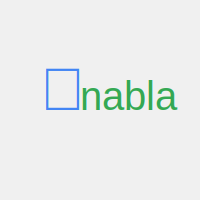

Documentation#
{kind=link}
Welcome to Nabla, a Python library for differentiable programming that brings JAX-like function transformations and GPU acceleration to Python with deep integration with Mojo kernels.
User Guide
API Reference
What is Nabla?#
Nabla is a Python library that provides three key features:
Multidimensional Array computation (like NumPy) with strong GPU acceleration
Composable Function Transformations:
vmap,grad,jit, and moreDeep integration with (custom) Mojo kernels
Quick Start#
import nabla as nb
# Example function using Nabla's array operations
def foo(input):
return nb.sum(input ** 2, axis=0)
# Vectorize, differentiate, accelerate
foo_grads = nb.jit(nb.grad(nb.vmap(foo)))
gradients = foo_grads([nb.randn((10, 5))])
Key Features#
Function Transformations#
grad: Automatic differentiationvmap: Vectorization over batch dimensionsjit: Just-in-time compilation for performancevjp/jvp: Vector-Jacobian and Jacobian-vector products
Array Operations#
Comprehensive mathematical operations (unary, binary, linear algebra)
NumPy-compatible API design
GPU acceleration through Mojo kernels
Broadcasting and shape manipulation
Integration#
Python API for ease of use
Mojo kernels for performance-critical operations
JAX-like transformation semantics
PyTorch-style imperative programming support
Installation#
pip install nabla-ml